DriveSafe
Isomo 1 : Ibyapa n'ibisobanuro
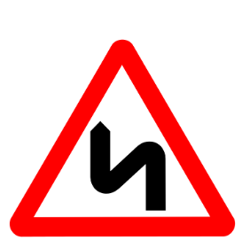
Amakoni abiri cyangwa uruhererekane rw'amakoni arenga abiri, irya mbere riri ibumoso.
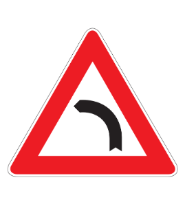
Ikoni ibumoso (ahegereye ikoni ryateza ibyago ibumoso)
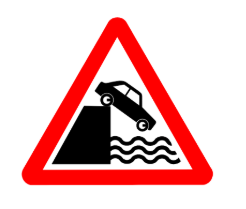
Uguhinguka ku mwaro cyangwa ku nkombe cyangwa ahegereye icyome.
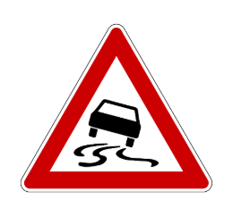
Umuhanda unyerera (ahegereye igice cy'umuhanda ushobora kuba unyerera).
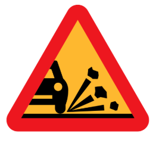
Utubuye dutaruka mu muhanda (ahegereye igice cy'umuhanda aho utubuye dushobora gutaruka).
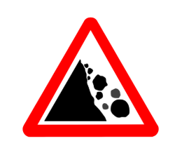
Amabuye ahanuka (ahegereye igice cy’umuhanda ahari ibyago byaterwa n’amabuye ahanuka cyangwa amabuye ari mu muhanda) (ikigereranyo gishobora gucurikwa hakurikijwe uruhande ibyago byaturukamo).
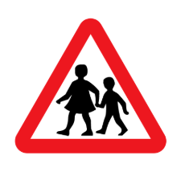
“Abana” (cyerekana akayira k’abana, nk’igihe bavuye mu ishuri cyangwa ku kibuga cy’imikino).
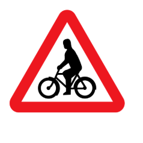
“Aho abanyamagare bahingukira” (cyerekana aho abanyamagare binjirira mu muhanda cyangwa bawambukiranya).
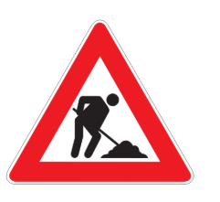
“Imirimo” (ahegereye igice cy’umuhanda gikorwamo imirimo)
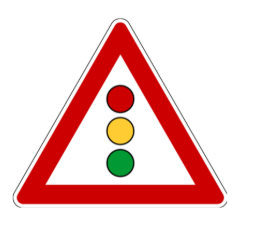
Ibimenyetso bimurika ahegereye akayira (uburyo bwo kugendera mu muhanda bugengwamo n’ikimenyetso cy’amatara y’amabara atatu).
“Ikibuga cy’indege” (ahegereye aho umuhanda ucibwa hejuru n’indege zarara igihe ziguruka cyangwa zigwa mu kibuga).
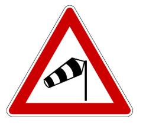
Umuyaga w’intambike” (ahegereye igice cy’umuhanda gihuhwamo kenshi n’inkubi y’umuyaga w’intambike).
“Inkomane” gutambuka mbere hakurikijwe amategeko rusange yo gutambuka mbere.
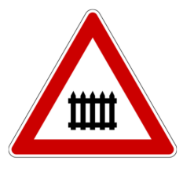
Ahegereye amasangano y’inzira nyabagendwa n’inzira ya gari ya moshi ibambiye
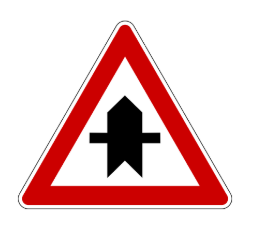
Imihanda yiyunga kumuhanda munini umuyobozi arimo
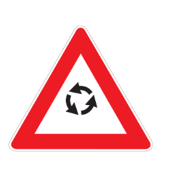
Aho banyura bazengurutse” (ahegereye inkomane banyuramo bategetswe kuzenguruka)
Ahegereye amasangano y’inzira nyabagendwa n’inzira ya gari ya moshi hatabambiye
“Ibyago” (ahegereye icyago kidasobanuye ukundi).
“Icyago” (imitemeri n’ibitembo bifite amabara atukura n’ayera asimburana byerekana icyago kidahoraho kandi bigenewe kwerekana aho bagana cyangwa aho bayoberereza umuhanda nk’igihe cy’impanuka cyangwa hari imirimo ikorwa mu muhanda).
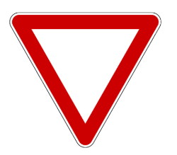
“Tanga inzira” (gitegeka umuyobozi wese ugeze ku nkomane icyimenyetso cyo guha inzira ibinyabiziga bigenda mu muhanda yegera).
“Hagarara akanya gato” (gitegeka umuyobozi wese mu nkomane ahari icyimenyetso cyo guhagarara akanya gato mbere yo kwinjira mu nkomane no guha inzira ibindi binyabiziga bigenda mu muhanda yegera).
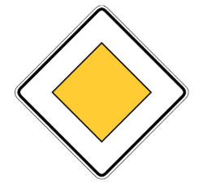
“Umuhanda batambukamo mbere” (ikimenyetso cyashyiriweho abagenda mu muhanda kibabwirako mu nkomane z’uwo muhanda n’iyindi abagenzi bagendamo cyangwa baturuka muri iyo mihanda yindi bagomba guha inzira abagenzi bagendera mu muhanda uriho iki cyapa).
“Gutambuka mbere kw’ibinyabiziga biturutse aho ujya” (birabujijwe ku muyobozi wese wegera umuhanda ufunganye, aho kubisikana biruhije cyangwa bidashoboka kwinjira muri iyo mfunganywa igihe cyose bidashoboka kuyirenga bidatumye ikinyabiziga kimwe cyangwa byinshi biturutse aho agana bihagarara).
Ntihanyurwa” (nta kinyabiziga kihanyurwa).
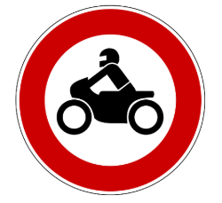
Ntihanyurwa n’amapikipiki
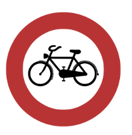
Ntihanyurwa n’iminyamitende
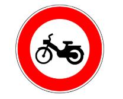
Ntihanyurwa na za velomoteri
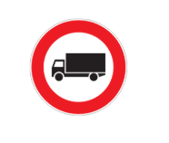
Ntihanyurwa n’ibinyabiziga bigenewe gutwara ibicuruzwa
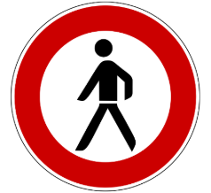
Ntihanyurwa n’abanyamaguru
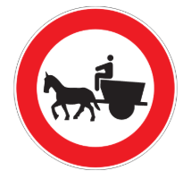
Ntihanyurwa n’ibinyabiziga bikururwa n’inyamaswa
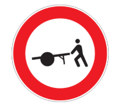
Ntihanyurwa n’utunyamitwaro dusunikwa
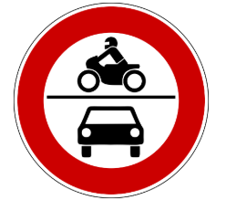
Ntihanyurwa n’amoko y’ibinyabiziga bifite moteri bishushanyijwe
Birabujijwe gukata ibumoso
Birabujijwe gukata iburyo
Birabujijwe guhindukira
Birabijijwe guhagarara umwanya munin
Ibitaro” (cyereka abayobozi b’ibinyabiziga ko bakwiye kwitonda iyo bageze hafi y’amavuriro cyane cyane bakirinda gutera urusaka bakoresheje amahoni cyangwa imyuka ivubuka muri moteri
Ibitaro” (cyereka abayobozi b’ibinyabiziga ko bakwiye kwitonda iyo bageze hafi y’amavuriro cyane cyane bakirinda gutera urusaka bakoresheje amahoni cyangwa imyuka ivubuka muri moteri
“Parikingi” (cyerekana ahantu ibinyabiziga byemewe guhagarara umwanya munini).
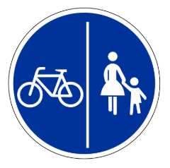
“Inzira y’iminyamitende n’abanyamaguru itegetswe” (gitegeka buri kinyamitende cyangwa velomoteri ndetse n’abanyamaguru kunyura mu nzira iriho icyo cyapa mu ntangiriro kikabuza abandi bagenzi kunyura muri iyo nzira).